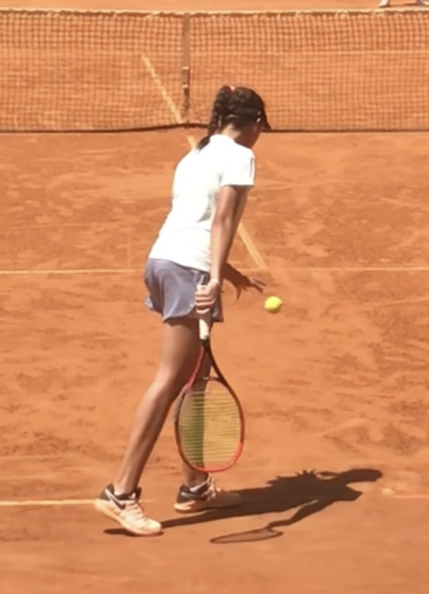
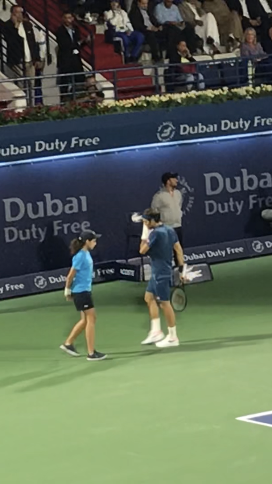
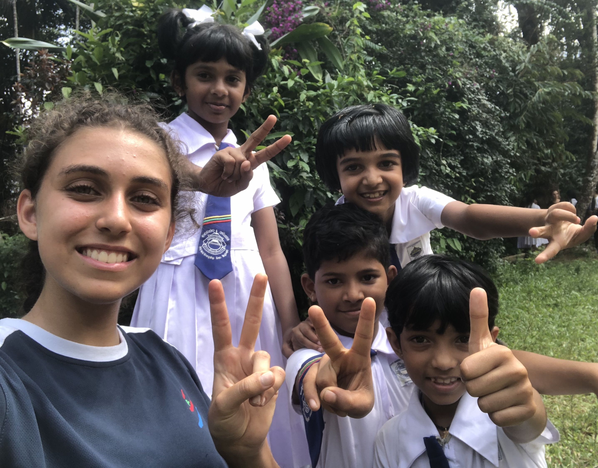

My name is Sarah, I'm 18 years old and I'm Lebanese. I was born in Lebanon but I lived in Dubai,UAE my whole life.Since I was 5, I've been playing tennis regularly and throughout the years, I've been travelig around Europe to attend Tennis Camps during the summer. I went to a French-Lebanese School and obtained my French Baccalauréat in 2021. After graduating from high school, I moved to Cergy to enroll in the Global BBA program at ESSEC Business School.
Tennis is my passion, I have been playing for the past 13 years and competed in the UAE and in Lebanon for 8 years. Until today, even though I don't have as much time as before to train, I am still really passionate about this sport and follow all the international tournaments around the world.
Apart from tennis, I have played other sports for fun and at school like: badminton, table-tennis, basketball, swimming and I can say that I enjoyed them a lot. A few years ago, I was the Captain of my school's badminton team and I was able to put in pratice all the lessons I've learnt in tennis, which led to us winning the tournament🏆.
In the picture below, I was competing in a tournament in Lebanon.

From 2015 to 2019, I was a Ballkid at the Dubai Duty Free Tennis Championships in Dubai. During those 4 years I was lucky enough to ballkid for some of the biggest tennis players in the world such as: Roger Federer, Novak Djokovic and Andy Murray. This experience was lifechanging and allowed me to be more responsible and mature.
Since 2019, I've been promoted to occupy the position of ''Ballkid Supervisor''. I, along with 5 others supervisors, are in charge of the training, organization and management of a group of 120 ballkids. We establish the daily plannings and ensure the smooth rotations of teams on court. This is an extremely difficult job because everything relies on our shoulders and if there are any issues with ballkids on the court, we are responsible for that. Below is a video that was made by one of the supervisors showing a Day in the Life of a Ballkid.
This is a picture of me ballkiding for Roger Federer in 2019.

Apart from sports, I really enjoy traveling and discovering different countries and cultures in the world. During my childhood, I traveled to many countries in Europe such as France, Spain, Italy, Switzerland, Monaco, Germany. We visited both the mountains and the sea and I really liked exploring environments that are very different from Dubai's landscape. In addition, I traveled to Sri Lanka during a school trip and I can say that this was the most memorable trip of my life. Hiking in the jungle, doing extreme sports activies, and meeting young kids at a local school was something that I've never done before and it really opened my eyes on a different side of life, a beautiful simple side that we don't tend to see when we live in very developed cities.
